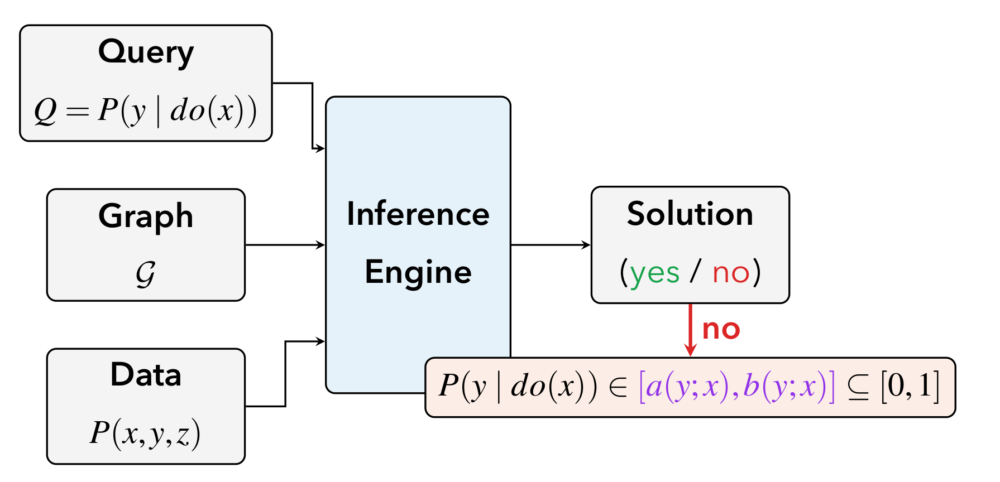
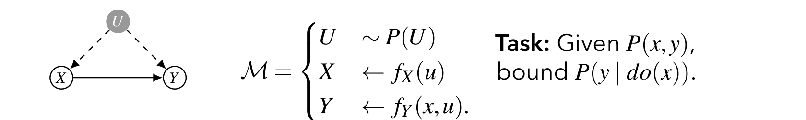
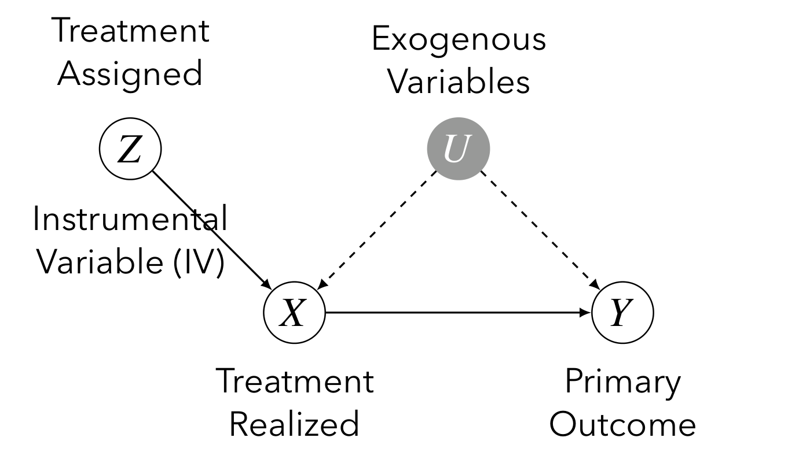
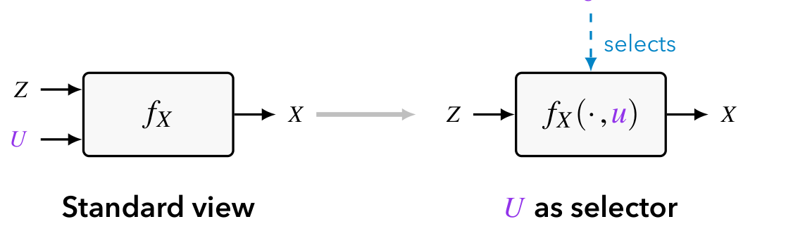
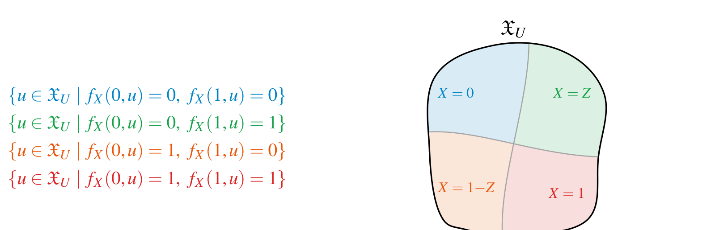
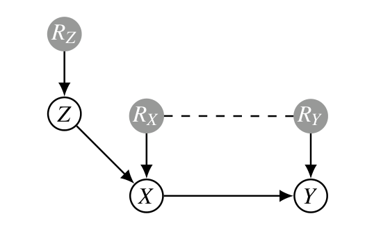
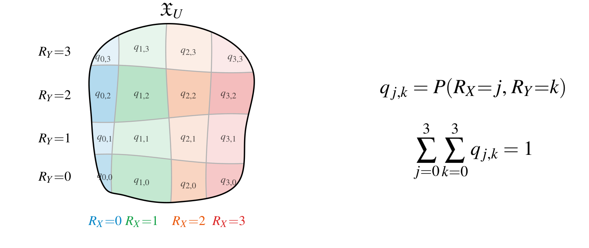
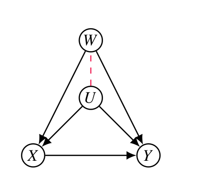

본 포스트는 서울대학교 GSDS Sanghack Lee 교수님의 Causal Inference 강의 자료(Partial Identification)를 바탕으로, 강의를 처음 듣는 독자도 논리적 흐름을 따라갈 수 있도록 재구성한 것입니다. 자연 경계와 정준형 모델의 원전은 Balke and Pearl (1997)의 선형계획 기반 경계 도출이며, 마지막 절의 부분 관측 공변량 경계는 Li and Pearl (2022, AAAI)을 따릅니다.
한 줄 요약 (TL;DR)
“인과효과가 점 식별되지 않아도, 관측분포와 인과 그래프가 허용하는 값의 범위를 \([0,1]\)보다 좁은 구간으로 좁힐 수 있습니다.”
지금까지의 강의가 “이 효과를 하나의 값으로 계산할 수 있는가”를 물었다면, 이번 강의는 그 답이 “아니오”일 때 무엇이 남는가를 묻습니다. 답은 포기가 아니라 구간입니다.
출발점은 자연 경계(natural bounds) 입니다. 절단된 곱 전개에서 미관측 \(U\)에 대한 조건부 확률 \(P(y \mid x, u)\)가 \([0,1]\)을 벗어날 수 없다는 사실 하나만 대입하면 \(P(y,x) \le P(y \mid do(x)) \le P(y,x) + 1 - P(x)\)가 곧바로 나옵니다. 이 경계는 보(bow) 그래프에서는 더 좁힐 수 없지만(tight), 도구변수 \(Z\)처럼 그래프에 추가 구조가 있으면 정보를 다 쓰지 못합니다.
그 정보를 마저 짜내는 장치가 정준형 모델(canonical type model) 입니다. 임의로 복잡한 \(U\)를, “\(Z\)가 바뀔 때 \(X\)가 어떻게 반응하는가”라는 반응 유형으로 유한 분할하면 — 이진 IV에서는 순응자·반항자·절대 수용자·절대 미수용자의 4가지 — 무한 차원 최적화가 16개 모수 \(q_{j,k}\) 위의 선형계획으로 환원됩니다. 그리고 이 LP의 경계는 자연 경계보다 언제나 좁습니다.
마지막으로 백도어 집합의 일부만 관측되는 상황에서는, 알려진 주변분포와 프레셰 경계가 부과하는 제약만으로 효과를 경계 짓는 Li–Pearl의 정식화를 살펴봅니다.
들어가며 (Overview)
인과추론의 핵심 목표는 개입(intervention) 분포 \(P(y \mid do(x))\)를 관측 데이터로부터 알아내는 것입니다. 지금까지 우리는 주로 점 식별(point identification) 에 집중해 왔습니다. 즉, 백도어 기준(backdoor criterion)이나 do-calculus를 통해 \(P(y \mid do(x))\)를 관측분포 \(P(V)\)의 함수로 정확히 하나의 값으로 표현할 수 있는지를 물었습니다.
하지만 현실에서는 미관측 교란변수(unobserved confounder)가 존재하여 인과효과가 점 식별되지 않는 경우가 매우 흔합니다. 이때 “식별 불가능하니 포기한다”가 아니라, 관측분포가 허용하는 범위 내에서 인과효과가 가질 수 있는 값의 구간 \([a, b]\)를 구하자는 것이 바로 부분 식별(partial identification) 의 발상입니다.
즉 강의가 던지는 질문은 이렇게 바뀝니다. 인과효과가 식별되지 않을 때, 우리는 \(P(y \mid do(x))\)에 대해 여전히 무언가를 말할 수 있는가? 이번 강의는 그 “무언가”가 다음과 같은 구간의 형태로 주어짐을 보입니다.
\[ P(y \mid do(x)) \in [a(y;x),\, b(y;x)] \subseteq [0, 1]. \]
1. 식별 문제와 부분 식별 문제 (The Identification Problem & Partial Identification)
1.1 식별 추론 엔진의 두 가지 출력
인과 식별 문제는 다음과 같은 입출력 구조로 추상화할 수 있습니다.
- 입력(Input):
- 질의(Query) \(Q = P(y \mid do(x))\)
- 인과 그래프(Graph) \(G\)
- 관측 데이터(Data) \(P(x, y, z)\)
- 추론 엔진(Inference Engine): 그래프와 데이터를 받아 식별 가능 여부를 판정
- 출력(Solution): 식별 가능 여부(yes/no)와 그에 따른 결과
여기서 출력은 두 갈래로 나뉩니다.
- 식별 가능(yes)한 경우: 인과효과가 관측분포의 함수로 정확히 표현됩니다. 예를 들어 \(Z\)가 백도어 기준을 만족하면
\[ P(y \mid do(x)) = \sum_z P(y \mid x, z)\, P(z) \]
가 성립합니다. 이는 점 식별입니다.
- 식별 불가능(no)한 경우: 인과효과를 단일 값으로 결정할 수는 없지만, 여전히 어떤 구간 안에 있음을 보장할 수 있습니다.
\[ P(y \mid do(x)) \in [a(y;x),\, b(y;x)] \subseteq [0, 1]. \]

1.2 부분 식별 가능성의 정의 (Causal Effect Partial-Identifiability)
이제 부분 식별을 엄밀하게 정의해 보겠습니다.
인과 다이어그램 \(G\)가 주어졌을 때, \(X\)가 \(Y\)에 미치는 인과효과가 부분 식별 가능(partially-identifiable) 하다는 것은 다음을 의미합니다.
- 관측분포 \(P(V)\)가 경계 \(P(y \mid do(x)) \in [a, b]\)를 결정하고,
- 그 경계 \([a, b]\)가 \([0, 1]\)의 진부분집합(proper subset) 이다.
이 정의에서 다음 두 가지 관계를 반드시 짚어야 합니다.
- 식별 가능 \(\Longrightarrow\) 부분 식별 가능: 정확히 식별되는 효과는 폭이 0인 구간 \([a, a]\)로 볼 수 있으므로, 당연히 부분 식별 가능합니다.
- 부분 식별 가능 \(\not\Longrightarrow\) 식별 가능: 그 역은 성립하지 않습니다. 즉, \([0,1]\)보다 좁은 경계를 줄 수 있다고 해서 그것이 한 점으로 줄어드는 것은 아닙니다.
직관적으로, 부분 식별은 점 식별보다 약한(더 일반적인) 개념입니다. “정확히 알 수 없어도, 무지의 범위를 \([0,1]\) 전체보다 좁힐 수 있다”는 것이 핵심입니다.
2. 자연 경계 (Natural Bounds)
2.1 문제 설정
가장 단순하면서도 본질적인 설정부터 시작합니다. 다음 그래프와 호환되는 SCM \(M\)을 생각합니다.
- \(X\)와 \(Y\) 사이에 직접 효과 \(X \to Y\)가 존재
- 미관측 변수 \(U\)가 \(X\)와 \(Y\) 모두에 영향 (\(U \to X\), \(U \to Y\), 즉 양방향 교란 \(X \leftrightarrow Y\))

- 과제(Task): 관측분포 \(P(x, y)\)가 주어졌을 때 \(P(y \mid do(x))\)를 경계 지어라.
여기서 \(U\)가 관측되지 않으므로 백도어 경로 \(X \leftarrow U \to Y\)를 조정할 수 없고, 따라서 인과효과는 점 식별되지 않습니다.
2.2 자연 경계 정리
관측분포 \(P(x, y)\)가 주어졌을 때, 인과효과 \(P(y \mid do(x))\)는 \([a(y;x), b(y;x)]\) 안에 있으며
\[ a(y;x) = P(y, x), \qquad b(y;x) = P(y, x) + 1 - P(x). \]
이 경계의 폭은 항상 \[ b(y;x) - a(y;x) = 1 - P(x) \] 입니다. 즉 \(x\)가 자주 관측될수록(\(P(x)\)가 클수록) 경계가 좁아진다는 직관과 정확히 일치합니다.
2.3 예시: XOR 메커니즘으로 보는 자연 경계
추상적인 경계가 실제로 어떻게 작동하는지 구체적인 SCM으로 확인해 보겠습니다.
- \(X, Y, U \in \{0, 1\}\)
- 메커니즘: \(X \leftarrow U\), \(Y \leftarrow X \oplus U\) (\(\oplus\)는 배타적 논리합)
- \(P(U = 0) = 0.9\)
관측분포 계산. \(X = U\)이므로 \(X = U\)가 항상 성립하고, 따라서 \(Y = X \oplus U = U \oplus U = 0\)이 항상 성립합니다. 그러므로 관측분포는 다음과 같습니다.
| \(P(X, Y)\) | \(Y = 0\) | \(Y = 1\) |
|---|---|---|
| \(X = 0\) | 0.9 | 0 |
| \(X = 1\) | 0.1 | 0 |
참 인과효과 계산. 개입을 가하면 \(X\)와 \(U\)의 연결이 끊깁니다.
- \(do(X = 0)\): \(Y = 0 \oplus U = U\)이므로 \(P(Y = 1 \mid do(X = 0)) = P(U = 1) = 0.1\)
- \(do(X = 1)\): \(Y = 1 \oplus U\)이므로 \(Y = 1 \iff U = 0\), 즉 \(P(Y = 1 \mid do(X = 1)) = P(U = 0) = 0.9\)
자연 경계와 비교. 정리를 적용하면 (\(Y=1\)에 대해):
| \(P(Y=1 \mid do(x))\) (참값) | \(a(Y=1; X)\) | \(b(Y=1; X)\) | |
|---|---|---|---|
| \(X = 0\) | 0.1 | \(P(Y{=}1, X{=}0) = 0\) | \(0 + 1 - 0.9 = 0.1\) |
| \(X = 1\) | 0.9 | \(P(Y{=}1, X{=}1) = 0\) | \(0 + 1 - 0.1 = 0.9\) |
참값이 정확히 상한 \(b\) 에 위치함을 볼 수 있습니다. 이 예시는 자연 경계가 실제로 달성 가능한(tight) 경계임을 시사합니다.
2.4 절단된 곱을 통한 유도 (Truncated Product)
이제 자연 경계 정리를 단계별로 유도하겠습니다. 출발점은 미관측 \(U\)에 대한 표준적인 분해입니다.
\[ P(y \mid do(x)) = \sum_u P(y \mid x, u)\, P(u). \]
이 식은 \(do(X=x)\) 하에서 \(U\)가 \(X\)와 독립이 되어 \(P(u \mid do(x)) = P(u)\)임을 사용한 것입니다. 핵심 기교는 \(P(u)\)를 다음과 같이 자명하게 분해하는 것입니다.
\[ P(u) = P(u, x) + \big(P(u) - P(u, x)\big). \]
이를 대입하면
\[ \begin{aligned} P(y \mid do(x)) &= \sum_u P(y \mid x, u)\Big[P(u, x) + \big(P(u) - P(u, x)\big)\Big] \\ &= \sum_u P(y \mid x, u)\, P(u, x) + \sum_u P(y \mid x, u)\big(P(u) - P(u, x)\big). \end{aligned} \]
여기서 첫째 항은 곱셈 법칙 \(P(y \mid x, u)\, P(x, u) = P(y, x, u)\)에 의해
\[ \sum_u P(y \mid x, u)\, P(u, x) = \sum_u P(y, x, u) = P(y, x) \]
로 정리됩니다. 따라서
\[ P(y \mid do(x)) = P(y, x) + \underbrace{\sum_u P(y \mid x, u)\big(P(u) - P(u, x)\big)}_{(\ast)}. \]
이제 \((\ast)\)를 \(0 \le P(y \mid x, u) \le 1\)이라는 확률의 기본 성질로 경계 짓습니다. 여기서 \(P(u) - P(u, x) = P(u) - P(x, u) \ge 0\)임에 유의합니다 (\(P(x,u) \le P(u)\)이므로 항상 음이 아님).
하한(lower bound). \(P(y \mid x, u) \ge 0\)이므로 \((\ast) \ge 0\). 따라서
\[ P(y \mid do(x)) \ge P(y, x) = a(y; x). \]
상한(upper bound). \(P(y \mid x, u) \le 1\)이므로
\[ \begin{aligned} P(y \mid do(x)) &\le P(y, x) + \sum_u \big(P(u) - P(u, x)\big) \\ &= P(y, x) + \Big(\underbrace{\sum_u P(u)}_{=1} - \underbrace{\sum_u P(u, x)}_{=P(x)}\Big) \\ &= P(y, x) + 1 - P(x) = b(y; x). \end{aligned} \]
이로써 자연 경계 정리가 유도되었습니다. “\(x\)가 실현되지 않은 \(U\)의 영역”에서 \(P(y \mid x, u)\)가 가질 수 있는 극단값(0 또는 1)을 대입한 것이 곧 하한과 상한임을 알 수 있습니다.
2.5 자연 경계의 타이트니스 (Tightness)
위에서 구한 경계가 실제로 달성 가능한지(tight), 즉 더 좁힐 수 없는 최선의 경계인지를 보장하는 정리입니다.
이진 \(X, Y \in \{0, 1\}\)에 대해, 임의의 분포 \(P(x, y)\)가 주어지면 다음을 만족하는 두 SCM \(M^{(1)}, M^{(2)}\)가 존재한다.
\[ P^{(1)}(x, y) = P^{(2)}(x, y) = P(x, y) \]
이면서
\[ P^{(1)}(y \mid do(x)) = a(y; x), \qquad P^{(2)}(y \mid do(x)) = b(y; x). \]
즉, 관측분포는 똑같지만 인과효과는 정확히 하한/상한을 실현하는 두 모델을 명시적으로 구성할 수 있으므로, 경계는 좁힐 수 없습니다.
두 모델의 구성
원래 SCM의 구조함수를 \(F = \{X \leftarrow f_X(u),\ Y \leftarrow f_Y(x, u),\ U \sim P(u)\}\)라 하고, 다음 두 변형을 정의합니다.
\[ F^{(1)} = \begin{cases} X \leftarrow f_X(u) \\ Y \leftarrow \begin{cases} f_Y(x, u) & \text{if } x = f_X(u) \\ 0 & \text{otherwise} \end{cases} \end{cases} \qquad F^{(2)} = \begin{cases} X \leftarrow f_X(u) \\ Y \leftarrow \begin{cases} f_Y(x, u) & \text{if } x = f_X(u) \\ 1 & \text{otherwise} \end{cases} \end{cases} \]
그리고 \(P^{(1)}(U) = P^{(2)}(U) = P(U)\)로 둡니다.
핵심 아이디어는 “\(X\)의 입력 \(x\)가 그 단위의 자연적 값 \(f_X(u)\)와 일치하지 않을 때” 의 출력을 한쪽은 0, 다른 쪽은 1로 고정해 극단을 만드는 것입니다.
두 모델이 동일한 관측분포를 유도함 (개입 없음)
개입이 없을 때 \(X\)는 항상 \(f_X(U)\)와 같습니다. 따라서 조건 \(x = f_X(u)\)가 항상 성립하여 \(Y\)는 늘 \(f_Y(X, U)\)를 출력합니다. 그러므로 두 모델 모두 원래 모델과 동일한 \(P(v)\)를 유도하고,
\[ \begin{aligned} P^{(i)}(x, y) &= \sum_u P^{(i)}(x \mid u)\, P^{(i)}(y \mid x, u)\, P(u) \\ &= \sum_u P(x \mid u)\, P(y \mid x, u)\, P(u) \\ &= \sum_u P(y, x, u) = P(y, x). \end{aligned} \]
즉 두 모델은 같은 그래프 \(G\)를 유도하고 같은 \(P(V)\)를 가집니다.
두 모델이 서로 다른 인과효과를 유도함 (개입 하)
\(do(X = x)\)를 가하면 \(X\)는 \(U\)와 무관하게 \(x\)로 강제됩니다. 이제 \(x\)가 자연적 값 \(f_X(U)\)와 일치할 수도, 아닐 수도 있으므로 효과를 두 경우로 분해합니다.
\[ \begin{aligned} P^{(i)}(Y = 1 \mid do(x)) &= \sum_u P^{(i)}(Y = 1 \mid x, u)\, P(u) \\ &= P^{(i)}\big(Y = 1 \mid x, f_X(U) = x\big)\, P\big(f_X(U) = x\big) \\ &\quad + P^{(i)}\big(Y = 1 \mid x, f_X(U) \neq x\big)\, P\big(f_X(U) \neq x\big) \\ &= P(x, Y = 1) + \mathbf{1}[i = 2]\,\big(1 - P(x)\big). \end{aligned} \]
- \(f_X(U) = x\)인 영역에서는 두 모델 모두 자연적 출력 \(f_Y(x,u)\)를 내므로 \(P(x, Y=1)\)만큼 기여합니다.
- \(f_X(U) \neq x\)인 영역(확률 \(1 - P(x)\))에서는 \(M^{(1)}\)은 \(Y = 0\)을 출력해 기여가 없고, \(M^{(2)}\)는 \(Y = 1\)을 출력해 \(1 - P(x)\)만큼 기여합니다.
따라서
\[ P^{(1)}(Y = 1 \mid do(x)) = P(x, Y{=}1) = a(y; x), \qquad P^{(2)}(Y = 1 \mid do(x)) = P(x, Y{=}1) + 1 - P(x) = b(y; x). \]
두 모델이 하한과 상한을 각각 정확히 달성하므로, 자연 경계는 타이트합니다. \(\blacksquare\)
2.6 자연 경계의 한계 (Limitations)
그런데 방금 증명한 타이트니스에는 조건이 붙어 있습니다. 위 구성이 성립한 그래프는 \(X \to Y\)와 \(X \leftrightarrow Y\)만으로 이루어진 가장 단순한 구조, 이른바 보 그래프(bow graph) 였습니다. 이름 그대로 직접 경로와 양방향 호가 활처럼 겹쳐진 모양입니다.
- 보 그래프(이진 \(X, Y\))에서는 자연 경계가 타이트합니다. 관측분포 \(P(x,y)\)가 담고 있는 정보를 남김없이 소진했다는 뜻입니다.
- 그러나 그래프에 추가 구조가 있으면 타이트하지 않습니다. 대표적인 예가 도구변수 \(Z\)가 붙은 IV 모델입니다. 이때 우리는 \(P(x,y)\)가 아니라 \(P(x, y \mid z)\)를 관측하며, \(Z\)의 값마다 관측분포가 하나씩 주어지는 셈인데도 자연 경계는 이 정보를 낱개로만 사용합니다.
여기서 자연스럽게 다음 질문이 따라옵니다.
질문. 그래프의 구조를 더 적극적으로 활용해서 더 좁은 경계를 얻을 수 있을까요?
이 질문에 답하는 것이 다음 절의 정준형 모델(canonical type model)과 선형계획입니다. 핵심 전략은 “확률의 기본 성질 \(0 \le P(y \mid x, u) \le 1\) 하나만 쓰는” 자연 경계의 방식을 버리고, 그래프가 부과하는 제약 전체를 최적화 문제의 제약조건으로 집어넣는 것입니다.
3. 비순응 (Non-Compliance)
3.1 비순응 실험과 IV 모델
임상시험에서 할당된 처치(assigned treatment) 와 실제로 받은 처치(realized treatment) 가 다른 경우가 흔합니다. 이를 비순응(non-compliance) 이라 합니다. 이 구조는 도구변수(Instrumental Variable, IV) 모델로 표현됩니다.
- \(Z\): 도구변수 / 할당된 처치 (Instrumental Variable, assigned treatment)
- \(X\): 실현된 처치 (realized treatment)
- \(Y\): 주요 결과 (primary outcome)
- \(U\): 미관측 외생변수 (exogenous variables), \(X\)와 \(Y\)를 동시에 교란
인과 그래프는 \(Z \to X \to Y\)의 사슬에, \(U \to X\)와 \(U \to Y\)의 교란이 더해진 형태입니다.

- 과제(Task): \(P(x, y \mid z)\)가 주어졌을 때 \(P(y \mid do(x))\)를 경계 지어라.
3.2 IV 모델에서의 자연 경계
자연 경계를 \(Z\)의 각 값에 대해 적용해 보겠습니다.
관측분포 \(P(X, Y \mid Z)\)가 주어졌을 때 \(P(y \mid do(x))\)는 \([a(y;x), b(y;x)]\) 안에 있으며
\[ a(y; x) = \max_z P(y, x \mid z), \qquad b(y; x) = \min_z\big[P(y, x \mid z) + 1 - P(x \mid z)\big]. \]
유도의 직관. \(Z\)의 특정 값으로 개입한 모델 \(M_z\)에 자연 경계를 적용하면
\[ P(y \mid do(x, z)) \le P(y, x \mid do(z)) + 1 - P(x \mid do(z)). \]
여기서 두 가지 사실이 쓰입니다.
- \(Z\)는 외생적이므로(부모가 \(U_Z\)뿐) \(P(\cdot \mid do(z)) = P(\cdot \mid z)\) 입니다.
- 배제 제약에 의해 \(Z\)는 \(X\)를 통해서만 \(Y\)에 작용하므로, \(X\)에 개입한 뒤에는 \(Z\)가 \(Y\)에 영향을 주지 않습니다. 즉 \(P(y \mid do(x, z)) = P(y \mid do(x))\).
따라서 모든 \(z\)에 대해 하한·상한이 성립하므로, 가장 강한 정보를 얻기 위해 하한은 \(\max_z\), 상한은 \(\min_z\)로 결합합니다.
주의. 그러나 IV 모델에서 자연 경계는 타이트하지 않습니다. 즉, 더 좁은 경계를 줄 수 있는 여지가 남아 있습니다. 이것이 다음에 다룰 정준형 모델과 선형계획의 동기입니다.
3.3 최적화 관점 (Optimization Perspective)
부분 식별을 최적화 문제로 바라보면 본질이 명확해집니다. 다음 그래프와 호환되는 SCM들의 집합을 \(\mathcal{M}\)이라 합시다.
\[ \mathcal{M} = \begin{cases} U \sim P(U) \\ Z \leftarrow f_Z(U_Z) \\ X \leftarrow f_X(Z, U) \\ Y \leftarrow f_Y(X, U) \end{cases} \]
그러면 \(P(x, y \mid z)\)가 주어졌을 때, 경계는 다음 최적화의 해입니다.
\[ \begin{aligned} a(y; x) &= \min_{M \in \mathcal{M}\,:\, P_M(y, x \mid z) = P(x, y \mid z)} P_M(y \mid do(x)), \\ b(y; x) &= \max_{M \in \mathcal{M}\,:\, P_M(y, x \mid z) = P(x, y \mid z)} P_M(y \mid do(x)). \end{aligned} \]
말로 풀면, “주어진 관측분포 \(P(x,y\mid z)\)를 똑같이 재현하는 모든 SCM 중에서, 인과효과를 가장 작게(크게) 만드는 모델을 찾으라” 는 것입니다.
난점. 이 최적화는 구조함수 \(F\)와 \(P(U)\)의 모수적 형태(parametric form)가 주어지지 않아 무한 차원 문제처럼 보여 직접 풀기 어렵습니다. 이를 유한 차원의 선형계획으로 바꾸는 것이 정준형 모델의 역할입니다.
3.4 정준형 모델 — 미관측 변수의 분할 (Canonical Type Models)
3.4.1 미관측 영역의 분할
출발점: \(U\)를 “선택자(selector)”로 읽기. 구조방정식 \(X \leftarrow f_X(Z, U)\)를 보는 관점을 한 번 바꾸는 데서 모든 것이 시작됩니다. 보통 우리는 이 식을 “\(X\)는 \(Z\)와 \(U\) 둘 다에 의해 결정된다”고 읽습니다. 두 개의 입력이 하나의 상자 \(f_X\)로 들어가 \(X\)를 내놓는 그림입니다.
그런데 \(U = u\)를 하나 고정하고 나면 상황이 달라집니다.
- \(U = u\)가 정해지면 \(f_X(\cdot, u)\)는 \(Z\)에서 \(X\)로 가는 하나의 구체적인 결정론적 함수가 됩니다.
- 즉 \(U\)는 \(X\)를 직접 만들어내는 입력이라기보다, \(Z \to X\)의 어떤 사상(mapping)이 작동할지를 고르는 스위치입니다.

이 관점을 받아들이면 다음 질문이 자연스럽습니다. \(Z \to X\) 사상은 몇 가지나 있을 수 있는가? 그 가짓수만큼만 \(U\)를 구분하면 충분하기 때문입니다.
\(U\) 자체는 임의의 복잡한 공간을 가질 수 있지만, \(X\)가 \(Z\)에 어떻게 반응하는가 라는 관점에서 \(U\)의 영역 \(\mathcal{X}_U\)를 분할할 수 있습니다.
이진 \(Z\)와 \(X\)의 경우, 두 개의 \(Z\) 값에서 두 개의 \(X\) 값으로 가는 함수의 가짓수는
\[ |\mathcal{X}_X|^{|\mathcal{X}_Z|} = 2^2 = 4 \]
입니다. 따라서 \(\mathcal{X}_U\)는 다음 네 개의 부분집합으로 분할됩니다.
\[ \begin{aligned} &\{u \in \mathcal{X}_U \mid f_X(Z{=}0, u) = 0,\ f_X(Z{=}1, u) = 0\} \\ &\{u \in \mathcal{X}_U \mid f_X(Z{=}0, u) = 0,\ f_X(Z{=}1, u) = 1\} \\ &\{u \in \mathcal{X}_U \mid f_X(Z{=}0, u) = 1,\ f_X(Z{=}1, u) = 0\} \\ &\{u \in \mathcal{X}_U \mid f_X(Z{=}0, u) = 1,\ f_X(Z{=}1, u) = 1\} \end{aligned} \]

일반적으로 \(Z\)가 삼진(ternary)이고 \(X\)가 이진이면 \(2^3 = 8\)가지가 됩니다.
3.4.2 반응 변수 (Response Variables)
이러한 분할을 하나의 이산 확률변수 반응 변수(Response Variable) \(R_X\)로 특성화합니다.
\[ \begin{aligned} R_X = 0 &\iff \{f_X(0, u) = 0,\ f_X(1, u) = 0\} &&\iff X = 0 \\ R_X = 1 &\iff \{f_X(0, u) = 0,\ f_X(1, u) = 1\} &&\iff X = Z \\ R_X = 2 &\iff \{f_X(0, u) = 1,\ f_X(1, u) = 0\} &&\iff X = 1 - Z \\ R_X = 3 &\iff \{f_X(0, u) = 1,\ f_X(1, u) = 1\} &&\iff X = 1 \end{aligned} \]
즉 미관측 변수 \(U\)의 역할이 “\(Z\)에 대한 \(X\)의 반응 유형” 이라는 단 하나의 범주형 변수로 압축됩니다. 마찬가지로 \(Y\)에 대한 반응 변수 \(R_Y\), \(Z\)에 대한 \(R_Z\)를 정의할 수 있고, 그래프는 \(U\)가 \((R_X, R_Y, R_Z)\)로 대체된 형태가 됩니다.

\(R_X\)와 \(R_Y\)를 함께 보면 분할은 더 잘게 나뉩니다. \(R_X \in \{0,1,2,3\}\)이 \(\mathcal{X}_U\)를 4개로 나누고 \(R_Y \in \{0,1,2,3\}\)도 독립적으로 4개로 나누므로, 두 기준을 겹쳐 놓으면 \(\mathcal{X}_U\)는 \(4 \times 4 = 16\)개의 영역으로 분할됩니다. 각 영역의 확률 질량을
\[ q_{j,k} = P(R_X = j,\ R_Y = k), \qquad \sum_{j=0}^{3} \sum_{k=0}^{3} q_{j,k} = 1 \]
로 두면, 이 16개 숫자가 모델에 남은 자유도 전부입니다.

3.4.3 정준형 모델의 정의
\(X, Y, Z \in \{0, 1\}\)이고 \(U = \{R_X, R_Y, R_Z\}\)인 SCM \(M'\)을 생각한다. 여기서 \(R_X, R_Y \in \{0, 1, 2, 3\}\), \(R_Z \in \{0, 1\}\)이며
\[ M' = \begin{cases} X \leftarrow f_X(z, r_X) \\ Y \leftarrow f_Y(x, r_Y) \\ Z \leftarrow r_Z \end{cases} \]
구조함수는 다음과 같이 정의되며, 각 반응 유형에는 비순응 문헌에서 쓰는 고전적 명칭이 붙습니다.
\[ f_X(z, r_X) = \begin{cases} 0 & \text{if } r_X = 0 \quad \text{(never-taker, 절대 미수용자)} \\ z & \text{if } r_X = 1 \quad \text{(complier, 순응자)} \\ 1 - z & \text{if } r_X = 2 \quad \text{(defier, 반항자)} \\ 1 & \text{if } r_X = 3 \quad \text{(always-taker, 절대 수용자)} \end{cases} \]
\[ f_Y(x, r_Y) = \begin{cases} 0 & \text{if } r_Y = 0 \quad \text{(never-recover, 절대 미회복)} \\ x & \text{if } r_Y = 1 \quad \text{(helped, 도움받음)} \\ 1 - x & \text{if } r_Y = 2 \quad \text{(hurt, 해로움)} \\ 1 & \text{if } r_Y = 3 \quad \text{(always-recover, 절대 회복)} \end{cases} \]
- 순응자(complier): 할당받은 대로 처치를 받음 (\(X = Z\)).
- 반항자(defier): 할당과 반대로 행동 (\(X = 1 - Z\)).
- 절대 수용/미수용자: 할당과 무관하게 항상 받거나/안 받음.
- \(Y\) 측의 도움받음(helped): 처치를 받으면 회복 (\(Y = X\)). 해로움(hurt): 처치가 오히려 해가 됨 (\(Y = 1 - X\)).
3.4.4 정준형 모델로의 환원 정리
임의의 IV 모델 \(M_1\)에 대해, 다음을 만족하는 정준형 모델 \(M_2\)가 존재한다.
\[ P_{M_1}(x, y \mid z) = P_{M_2}(x, y \mid z), \qquad P_{M_1}(y \mid do(x)) = P_{M_2}(y \mid do(x)). \]
따라서 모든 정준형 모델의 집합 \(\mathcal{M}\)에 대해, \(P(x, y \mid z)\)가 주어졌을 때
\[ P(y \mid do(x)) \in [a(y;x), b(y;x)], \quad \begin{aligned} a(y;x) &= \min_{M \in \mathcal{M}} P_M(y \mid do(x)), \\ b(y;x) &= \max_{M \in \mathcal{M}} P_M(y \mid do(x)) \end{aligned} \]
단, \(P_M(x, y \mid z) = P(x, y \mid z)\)를 제약으로 합니다. 이제 최적화 변수는 유한한 반응 변수들의 결합분포뿐이므로 문제가 다룰 만해집니다.
3.5 선형계획 정식화 (Linear Programming Formulation)
3.5.1 모수와 제약
결합분포 \(P(r_X, r_Y)\)는 16개의 모수를 가집니다.
\[ q_{j,k} = P(R_X = j,\ R_Y = k), \qquad j, k \in \{0, 1, 2, 3\}. \]
이들은 확률이므로 다음 확률 제약(probabilistic constraints) 을 만족해야 합니다.
\[ \sum_{j} \sum_{k} q_{j,k} = 1, \qquad q_{j,k} \ge 0 \ \ \forall j, k. \]
벡터 \(\mathbf{q} = \big(q_{j,k} \mid j, k \in \{0,1,2,3\}\big)\)는 16차원 공간 안의 한 점(확률 단체, simplex)을 지정합니다.
3.5.2 관측분포를 선형식으로 표현
관측가능한 양 \(P_{yx.z} = P(Y = y, X = x \mid Z = z)\)를 \(q_{j,k}\)의 선형 함수로 쓸 수 있습니다.
예를 들어 \(P_{00.0} = P(Y=0, X=0 \mid Z=0)\)를 봅시다.
- \(Z=0\)에서 \(X=0\)이 되려면: never-taker(\(R_X=0\)) 또는 complier(\(R_X=1\), 이때 \(X=Z=0\)).
- 그리고 \(X=0\)에서 \(Y=0\)이 되려면: never-recover(\(R_Y=0\)) 또는 helped(\(R_Y=1\), 이때 \(Y=X=0\)).
\[ \begin{aligned} P_{00.0} &= P(\text{never-taker}, \text{never-recover}) + P(\text{never-taker}, \text{helped}) \\ &\quad + P(\text{complier}, \text{never-recover}) + P(\text{complier}, \text{helped}) \\ &= q_{00} + q_{01} + q_{10} + q_{11}. \end{aligned} \]
또 다른 예로 \(P_{10.1} = P(Y=1, X=0 \mid Z=1)\):
- \(Z=1\)에서 \(X=0\)이 되려면: never-taker(\(R_X=0\)) 또는 defier(\(R_X=2\), 이때 \(X = 1 - Z = 0\)).
- \(X=0\)에서 \(Y=1\)이 되려면: hurt(\(R_Y=2\), \(Y = 1 - 0 = 1\)) 또는 always-recover(\(R_Y=3\)).
\[ \begin{aligned} P_{10.1} &= P(\text{never-taker}, \text{hurt}) + P(\text{never-taker}, \text{always-recover}) \\ &\quad + P(\text{defier}, \text{hurt}) + P(\text{defier}, \text{always-recover}) \\ &= q_{02} + q_{03} + q_{22} + q_{23}. \end{aligned} \]
같은 논리로 8개 관측확률 전체를 선형 변환으로 정리합니다.
\[ \begin{array}{ll} p_{00.0} = q_{00} + q_{01} + q_{10} + q_{11}, & p_{00.1} = q_{00} + q_{01} + q_{20} + q_{21}, \\ p_{01.0} = q_{20} + q_{22} + q_{30} + q_{32}, & p_{01.1} = q_{10} + q_{12} + q_{30} + q_{32}, \\ p_{10.0} = q_{02} + q_{03} + q_{12} + q_{13}, & p_{10.1} = q_{02} + q_{03} + q_{22} + q_{23}, \\ p_{11.0} = q_{21} + q_{23} + q_{31} + q_{33}, & p_{11.1} = q_{11} + q_{13} + q_{31} + q_{33}. \end{array} \]
3.5.3 인과효과를 선형식으로 표현
목표인 인과효과 \(P(Y = y \mid do(X = x))\) 역시 \(q_{j,k}\)의 선형 함수입니다. \(X\)를 강제로 고정하면 \(Y\)는 오직 \(R_Y\)에만 의존합니다.
\[ \begin{aligned} P(Y = 1 \mid do(X = 0)) &= P\big(r_Y \in \{\text{hurt}, \text{always-recover}\}\big) = P(r_Y = 2) + P(r_Y = 3) \\ &= q_{02} + q_{12} + q_{22} + q_{32} + q_{03} + q_{13} + q_{23} + q_{33}. \end{aligned} \]
\[ \begin{aligned} P(Y = 1 \mid do(X = 1)) &= P\big(r_Y \in \{\text{helped}, \text{always-recover}\}\big) = P(r_Y = 1) + P(r_Y = 3) \\ &= q_{01} + q_{11} + q_{21} + q_{31} + q_{03} + q_{13} + q_{23} + q_{33}. \end{aligned} \]
(\(do(X=0)\)이면 hurt와 always-recover가 \(Y=1\)을 내고, \(do(X=1)\)이면 helped와 always-recover가 \(Y=1\)을 냅니다.)
3.5.4 선형계획 최적화
이제 모든 조각이 모였습니다. \(P(x, y \mid z)\)가 주어지면 \(P(Y=1 \mid do(X=0)) \in [a_{10}, b_{10}]\)의 경계는 다음 선형계획(LP) 으로 결정됩니다.
\[ \begin{aligned} a_{10} &= \min_{\mathbf{q}} \ \ q_{02} + q_{12} + q_{22} + q_{32} + q_{03} + q_{13} + q_{23} + q_{33} \\ b_{10} &= \max_{\mathbf{q}} \ \ q_{02} + q_{12} + q_{22} + q_{32} + q_{03} + q_{13} + q_{23} + q_{33} \end{aligned} \]
제약조건은 다음과 같습니다.
\[ \sum_{j=0}^{3} \sum_{k=0}^{3} q_{j,k} = 1, \qquad q_{j,k} \ge 0 \ \ \forall j, k, \]
그리고 위 8개의 관측분포 선형 등식 (관측된 \(p_{yx.z}\) 값과 일치).
목적함수와 제약이 모두 \(\mathbf{q}\)에 대해 선형이므로, 이는 표준적인 선형계획이며 효율적으로 풀 수 있습니다.
3.5.5 선형계획의 닫힌 형식 해 (Closed-form Solution)
이 LP는 다음과 같은 닫힌 형식의 해로 귀결됩니다.
\[ P(Y = 1 \mid do(X = 0)) \ge \max \begin{cases} p_{10.0} \\ p_{10.1} \\ p_{10.0} + p_{11.0} - p_{00.1} - p_{11.1} \\ p_{01.0} + p_{10.0} - p_{00.1} - p_{01.1} \end{cases} \]
\[ P(Y = 1 \mid do(X = 0)) \le \min \begin{cases} 1 - p_{00.0} \\ 1 - p_{00.1} \\ p_{10.0} + p_{11.0} + p_{01.1} + p_{10.1} \\ p_{01.0} + p_{10.0} + p_{10.1} + p_{11.1} \end{cases} \]
각 경계는 관측확률 \(p_{yx.z}\)의 선형결합이며, 목적함수와의 차이가 언제나 음이 아님이 증명됩니다. LP는 관측분포에 내재된 더 많은 제약(특히 \(Z\)를 통한 비순응 구조)을 한꺼번에 활용하므로, 자연 경계가 놓치는 정보를 추가로 짜냅니다.
3.5.6 부등식 유도 예시: 비자명한 하한의 정당화
상한 \(1 - p_{00.0}\) 같은 것은 자연 경계와 비슷하게 직관적이지만, \(p_{10.0} + p_{11.0} - p_{00.1} - p_{11.1}\) 같은 항이 어떻게 하한이 될 수 있는지는 검증이 필요합니다.
목적함수(=\(P(Y=1\mid do(X=0))\))와 관련 관측확률을 \(q\)로 펼쳐 봅시다.
\[ \begin{aligned} \text{Objective} &= q_{02} + q_{12} + q_{22} + q_{32} + q_{03} + q_{13} + q_{23} + q_{33}, \\ p_{10.0} &= q_{02} + q_{03} + q_{12} + q_{13}, \\ p_{11.0} &= q_{21} + q_{23} + q_{31} + q_{33}, \\ p_{00.1} &= q_{00} + q_{01} + q_{20} + q_{21}, \\ p_{11.1} &= q_{11} + q_{13} + q_{31} + q_{33}. \end{aligned} \]
이제 후보 하한을 계산하면
\[ p_{10.0} + p_{11.0} - p_{00.1} - p_{11.1} = q_{02} + q_{03} + q_{12} + q_{23} - q_{00} - q_{01} - q_{20} - q_{11} \]
이 됩니다 (\(q_{21}, q_{31}, q_{33}, q_{13}\) 항들이 상쇄). 따라서 목적함수에서 이 후보 하한을 빼면
\[ \begin{aligned} \text{Objective} - \big(p_{10.0} + p_{11.0} - p_{00.1} - p_{11.1}\big) &= q_{22} + q_{32} + q_{13} + q_{33} + q_{00} + q_{01} + q_{20} + q_{11} \\ &\ge 0 \end{aligned} \]
모든 \(q_{j,k} \ge 0\)이므로 차이가 항상 음이 아닙니다. 즉
\[ P(Y = 1 \mid do(X = 0)) \ge p_{10.0} + p_{11.0} - p_{00.1} - p_{11.1} \]
가 모든 실현 가능한 \(\mathbf{q}\)에 대해 성립하므로, 이것이 정당한 하한임이 확인됩니다.
4. 부분 관측 공변량에 대한 경계 (Bounds on Partially-Observed Covariates)
4.1 백도어 기준과 부분 관측 공변량
마지막으로, 백도어 조정 집합의 일부만 관측되는 상황을 다룹니다 (Li and Pearl, 2022, Bounds on Causal Effects and Application to High Dimensional Data, AAAI).
- 백도어 허용 집합(backdoor-admissible set)이 \(\{W, U\}\)인데,
- \(W\)는 관측되지만 \(U\)는 관측되지 않는 경우

만약 \(\{W, U\}\)를 모두 관측했다면 백도어 조정으로 정확히 식별됩니다.
\[ P(y \mid do(x)) = \sum_{w, u} P(y \mid x, w, u)\, P(w, u) = \sum_{w, u} \frac{P(x, y, w, u)\, P(w, u)}{P(x, w, u)}. \]
그러나 우리는 \(P(X, Y, W)\)와 \(P(U)\)만 알고 결합분포 \(P(X, Y, W, U)\)는 모릅니다. 이때 가장 소박한(naive) 경계는 자연 경계와 동일합니다.
\[ P(x, y) \le P(y \mid do(x)) \le 1 - P(x, y'), \]
여기서 \(y'\)은 \(Y \neq y\)를 뜻하며, \(1 - P(x, y') = P(x,y) + 1 - P(x)\)로 자연 경계의 상한과 정확히 일치합니다.
4.2 부분 관측 교란변수 하의 인과효과 경계
Li와 Pearl은 알려진 주변분포들이 부과하는 제약을 모두 활용하여 더 정교한 경계를 제시합니다. 핵심은 백도어 공식의 각 성분을 다음 변수들로 모수화하는 것입니다 (직관적으로 \(a_{w,u} \leftrightarrow P(x,y,w,u)\), \(b_{w,u} \leftrightarrow P(w,u)\), \(c_{w,u} \leftrightarrow P(x,w,u)\)).
\[ a(y; x) = \min \sum_{w, u} \frac{a_{w,u} \cdot b_{w,u}}{c_{w,u}}, \qquad b(y; x) = \max \sum_{w, u} \frac{a_{w,u} \cdot b_{w,u}}{c_{w,u}} \]
여기서 주변화 제약(marginalization constraints) 은 각 \(w \in W\)에 대해
\[ \sum_u a_{w,u} = P(x, y, w), \qquad \sum_u b_{w,u} = P(w), \qquad \sum_u c_{w,u} = P(x, w), \]
이고, 모든 \(w \in W\), \(u \in U\)에 대해 다음 순서·프레셰 경계(Fréchet–Hoeffding bounds) 제약이 부과됩니다.
\[ b_{w,u} \ge c_{w,u} \ge a_{w,u}, \]
\[ \begin{aligned} \max\{0,\ P(x, y, w) + P(u) - 1\} &\le a_{w,u} \le \min\{P(x, y, w),\ P(u)\}, \\ \max\{0,\ P(w) + P(u) - 1\} &\le b_{w,u} \le \min\{P(w),\ P(u)\}, \\ \max\{0,\ P(x, w) + P(u) - 1\} &\le c_{w,u} \le \min\{P(x, w),\ P(u)\}. \end{aligned} \]
- 부등식 \(b_{w,u} \ge c_{w,u} \ge a_{w,u}\) 는 사건의 포함 관계 \(\{x,y,w\} \subseteq \{x,w\} \subseteq \{w\}\)를 반영합니다(더 많은 조건을 요구할수록 확률이 작아짐).
- 프레셰 경계는 두 사건의 주변확률만 알 때 그 결합확률이 가질 수 있는 최대·최소 범위로, 결합분포 \(P(\cdot, U)\)를 모르기 때문에 등장합니다.
실제로는 \(a_{w,u}\)만으로도 충분한 모수화(sufficient parametrization) 가 가능하여 문제 차원을 더 줄일 수 있습니다.
정리하며 (Closing Remarks)
본 강의에서 우리는 인과효과가 점 식별되지 않을 때, 관측분포로부터 효과의 경계를 도출하는 여러 방법을 학습했습니다. 논증의 사슬을 단계별로 압축하면 다음과 같습니다.
| 단계 | 내용 | 근거 |
|---|---|---|
| ① 질문의 전환 | 식별이 실패해도 \(P(y \mid do(x)) \in [a, b] \subsetneq [0,1]\)은 말할 수 있다 | 부분 식별 가능성의 정의 |
| ② 첫 경계 | 절단된 곱 전개에서 \(0 \le P(y \mid x, u) \le 1\)만 대입하면 \(P(y,x) \le P(y \mid do(x)) \le P(y,x) + 1 - P(x)\) | 자연 경계 정리 |
| ③ 경계의 최선성 | 같은 \(P(x,y)\)를 유도하면서 하한·상한을 각각 달성하는 두 SCM을 명시적으로 구성 | 타이트니스 정리 |
| ④ 한계의 발견 | 보 그래프에서는 최선이지만, 도구변수 \(Z\)가 붙으면 \(P(x,y \mid z)\)의 정보를 다 쓰지 못한다 | 자연 경계의 한계 |
| ⑤ 문제의 재정식화 | 경계 구하기 = “관측분포를 재현하는 모든 SCM 위에서 효과를 최소화·최대화” | 최적화 관점 |
| ⑥ 무한을 유한으로 | \(U\)는 \(Z \to X\) 사상을 고르는 선택자일 뿐 → \(\mathcal{X}_U\)를 반응 유형으로 유한 분할 → 16개 모수 \(q_{j,k}\) | 반응 변수, 정준형 모델 |
| ⑦ 손실 없는 환원 | 임의의 IV 모델은 관측분포와 인과효과를 모두 보존하는 정준형 모델을 갖는다 | 대응 정리 |
| ⑧ 계산 가능한 답 | 목적함수와 제약이 모두 \(\mathbf{q}\)에 선형 → 표준 LP → 자연 경계보다 좁은 닫힌 형식 해 | 선형계획 정식화 |
| ⑨ 다른 결핍으로의 확장 | 백도어 집합의 일부만 관측될 때는 주변화 제약과 프레셰 경계로 결합분포의 무지를 메운다 | Li and Pearl (2022) |
개인적인 감상 몇 가지를 덧붙입니다.
- 가장 인상적인 지점은 ⑥의 관점 전환입니다. \(X \leftarrow f_X(Z, U)\)에서 \(U\)를 “또 하나의 입력”이 아니라 “어떤 함수가 작동할지 고르는 선택자” 로 읽는 순간, 문제의 성격이 통째로 바뀝니다. \(U\)의 정의역이 실수 전체든 함수 공간이든 상관이 없어집니다 — 우리가 구분해야 하는 것은 \(u\) 자체가 아니라 \(u\)가 유도하는 사상이고, 이진 \(Z, X\)에서 그것은 딱 4가지뿐이기 때문입니다. 무한 차원 최적화가 16차원 단체 위의 선형계획으로 내려앉는 근거가 어떤 정교한 근사도 아니고 “세는 방식을 바꾼 것” 이라는 점이 이 강의에서 가장 아름다운 대목이라고 생각합니다.
- 두 번째로 인상적인 것은 ③의 증명 방식입니다. “이 경계는 최선이다”를 보이기 위해 부등식을 더 조이려 애쓰는 대신, 경계를 정확히 실현하는 반례 두 개를 직접 만들어 버립니다. 그 구성도 기발합니다 — 관측 상황에서는 어차피 \(x = f_X(u)\)가 항상 성립하므로 “그렇지 않은 경우”의 출력을 0이나 1로 아무렇게나 정해도 관측분포는 꿈쩍하지 않지만, 개입 하에서는 바로 그 영역이 확률 \(1 - P(x)\)만큼 살아나 두 모델을 갈라놓습니다. 경계의 폭 \(1 - P(x)\)가 어디에서 왔는지가 이 구성 하나로 눈에 보이게 됩니다.
- 반응 유형에 붙은 이름들(순응자·반항자·절대 수용자·절대 미수용자)이 단순한 비유가 아니라 수학적 분할의 정확한 라벨이라는 점도 짚어 둘 만합니다. 흔히 이 용어들은 잠재 결과 프레임워크의 어휘로 소개되지만, 여기서는 “\(\mathcal{X}_U\)를 \(Z \to X\) 사상으로 나누면 정확히 네 조각”이라는 계산의 결과로 도출됩니다. 두 프레임워크가 같은 대상을 다른 입구로 만나고 있다는 사실이 이 자리에서 분명해집니다.
- 실용적 한계도 정직하게 남아 있습니다. 정준형 모델의 모수 개수는 변수의 정의역 크기에 대해 급격히 커집니다 — \(Z\)가 삼진만 되어도 \(R_X\)의 유형은 \(2^3 = 8\)가지가 되고, 사슬이 길어지면 결합 유형의 수가 곱으로 불어납니다. 이진·이산 변수라는 전제가 편의가 아니라 사실상의 적용 범위라는 뜻이며, 연속 변수의 경계를 어떻게 구할 것인가는 이 강의가 열어 둔 채로 남긴 질문입니다.
- 마지막 절의 Li–Pearl 정식화가 LP가 아니라는 점도 대비되어 흥미롭습니다. 목적함수 \(\sum_{w,u} a_{w,u} b_{w,u} / c_{w,u}\)는 분수 형태라 앞 절과 달리 선형계획으로 풀리지 않습니다. 같은 “부분 식별” 우산 아래에 있어도, 무엇을 모르는가(구조함수인가, 결합분포인가)에 따라 최적화의 난이도가 전혀 달라진다는 것을 보여 주는 좋은 대조입니다.